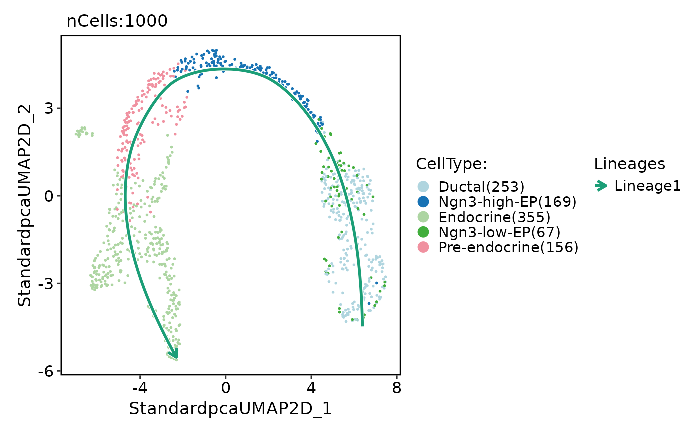
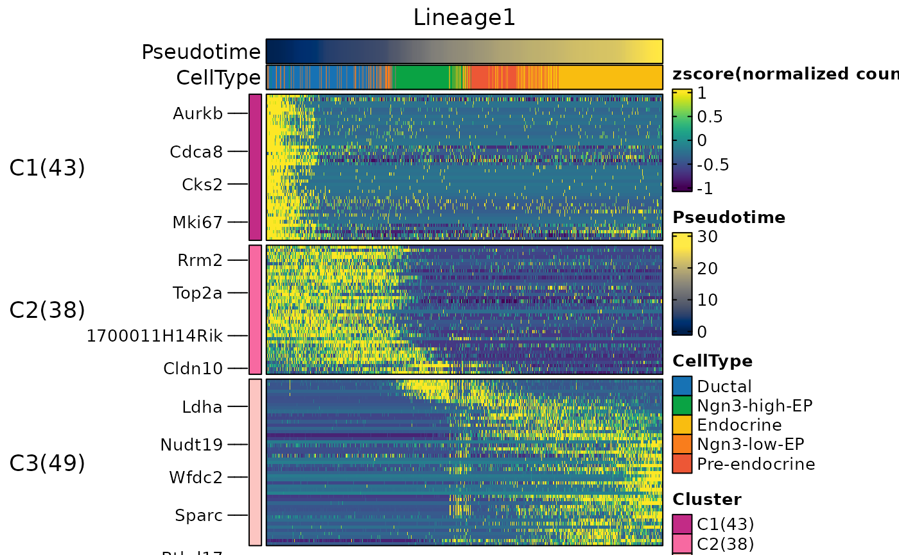

This function calculates gene-set scores from the specified database (db) for each lineage using the specified scoring method (score_method).
It then treats these scores as expression values and uses them as input to the RunDynamicFeatures function to identify dynamically enriched terms along the lineage.
RunDynamicEnrichment(
srt,
lineages,
score_method = "AUCell",
slot = "data",
assay = NULL,
min_expcells = 20,
r.sq = 0.2,
dev.expl = 0.2,
padjust = 0.05,
IDtype = "symbol",
species = "Homo_sapiens",
db = "GO_BP",
db_update = FALSE,
db_version = "latest",
convert_species = TRUE,
Ensembl_version = 103,
mirror = NULL,
TERM2GENE = NULL,
TERM2NAME = NULL,
minGSSize = 10,
maxGSSize = 500,
BPPARAM = BiocParallel::bpparam(),
seed = 11
)A Seurat object containing the results of differential expression analysis (RunDEtest).
If specified, the genes and groups will be extracted from the Seurat object automatically.
If not specified, the geneID and geneID_groups arguments must be provided.
A character vector specifying the lineages to plot.
The method to use for scoring. Can be "Seurat", "AUCell", or "UCell". Defaults to "Seurat".
A character vector specifying the slot in the Seurat object to use. Default is "counts".
A character vector specifying the assay in the Seurat object to use. Default is NULL.
A numeric value specifying the minimum number of expected cells. Default is 20.
A numeric value specifying the R-squared threshold. Default is 0.2.
A numeric value specifying the deviance explained threshold. Default is 0.2.
A numeric value specifying the p-value adjustment threshold. Default is 0.05.
A character vector specifying the type of gene IDs in the srt object or geneID argument. This argument is used to convert the gene IDs to a different type if IDtype is different from result_IDtype.
A character vector specifying the species for which the analysis is performed.
A character vector specifying the name of the database to be used for enrichment analysis.
A logical value indicating whether the gene annotation databases should be forcefully updated. If set to FALSE, the function will attempt to load the cached databases instead. Default is FALSE.
A character vector specifying the version of the database to be used. This argument is ignored if db_update is TRUE. Default is "latest".
A logical value indicating whether to use a species-converted database when the annotation is missing for the specified species. The default value is TRUE.
Ensembl database version. If NULL, use the current release version.
Specify an Ensembl mirror to connect to. The valid options here are 'www', 'uswest', 'useast', 'asia'.
A data frame specifying the gene-term mapping for a custom database. The first column should contain the term IDs, and the second column should contain the gene IDs.
A data frame specifying the term-name mapping for a custom database. The first column should contain the term IDs, and the second column should contain the corresponding term names.
A numeric value specifying the minimum size of a gene set to be considered in the enrichment analysis.
A numeric value specifying the maximum size of a gene set to be considered in the enrichment analysis.
A BiocParallelParam object specifying the parallel back-end to be used for parallel computation. Defaults to BiocParallel::bpparam().
The random seed for reproducibility. Defaults to 11.
data("pancreas_sub")
pancreas_sub <- RunSlingshot(pancreas_sub, group.by = "SubCellType", reduction = "UMAP")
#> Warning: No shared levels found between `names(values)` of the manual scale and the data's fill values.
#> Warning: No shared levels found between `names(values)` of the manual scale and the data's fill values.
#> Warning: Removed 8 rows containing missing values or values outside the scale range (`geom_path()`).
#> Warning: Removed 8 rows containing missing values or values outside the scale range (`geom_path()`).
pancreas_sub <- RunDynamicFeatures(pancreas_sub, lineages = "Lineage1", n_candidates = 200)
#> [2024-11-18 15:35:28.915759] Start RunDynamicFeatures
#> Workers: 10
#> Number of candidate features(union): 199
#> Calculate dynamic features for Lineage1...
#>
|
| | 0%
|
|=========== | 10%
|
|====================== | 20%
|
|================================= | 30%
|
|============================================ | 40%
|
|======================================================= | 50%
|
|================================================================== | 60%
|
|============================================================================= | 70%
|
|======================================================================================== | 80%
|
|=================================================================================================== | 90%
|
|==============================================================================================================| 100%
#>
#> [2024-11-18 15:35:31.838354] RunDynamicFeatures done
#> Elapsed time:2.92 secs
ht1 <- DynamicHeatmap(
srt = pancreas_sub,
lineages = "Lineage1",
cell_annotation = "SubCellType",
n_split = 4
)
#> 146 features from Lineage1 passed the threshold (exp_ncells>20 & r.sq>0.2 & dev.expl>0.2 & padjust<0.05):
#> Gcg,Iapp,Pyy,Chgb,Slc38a5,Rbp4,Lrpprc,Cck,2810417H13Rik,Chga...
#>
#> The size of the heatmap is fixed because certain elements are not scalable.
#> The width and height of the heatmap are determined by the size of the current viewport.
#> If you want to have more control over the size, you can manually set the parameters 'width' and 'height'.
ht1$plot

pancreas_sub <- RunDynamicEnrichment(
srt = pancreas_sub,
lineages = "Lineage1",
score_method = "AUCell",
db = "GO_BP",
species = "Mus_musculus"
)
#> [2024-11-18 15:35:32.865941] Start RunDynamicFeatures
#> Workers: 10
#> Species: Mus_musculus
#> Loading cached db: GO_BP version:3.18.0 nterm:15848 created:2024-11-18 14:32:38.567153
#> Data is raw counts. Perform NormalizeData(LogNormalize) on the data ...
#> Number of feature lists to be scored: 2716
#> [2024-11-18 15:35:35.514881] Start CellScoring
#> Workers: 10
#> Install package: "AUCell" ...
#> 'getOption("repos")' replaces Bioconductor standard repositories, see 'help("repositories", package = "BiocManager")'
#> for details.
#> Replacement repositories:
#> CRAN: https://cloud.r-project.org
#> Bioconductor version 3.18 (BiocManager 1.30.23), R 4.3.2 (2023-10-31)
#> Installing package(s) 'AUCell'
#> also installing the dependencies ‘graph’, ‘GSEABase’
#>
#> The downloaded binary packages are in
#> /var/folders/rv/3jnfbs0d6r7d0c5bfj7ft5k00000gn/T//RtmpAC8Cie/downloaded_packages
#> installing the source package ‘AUCell’
#> Warning: Feature names cannot have underscores ('_'), replacing with dashes ('-')
#> Warning: Feature names cannot have underscores ('_'), replacing with dashes ('-')
#> [2024-11-18 15:37:00.925086] CellScoring done
#> Elapsed time:1.42 mins
#> [2024-11-18 15:37:00.925902] Start RunDynamicFeatures
#> Workers: 10
#> Number of candidate features(union): 2716
#> Calculate dynamic features for Lineage1...
#>
|
| | 0%
|
|=========== | 10%
|
|====================== | 20%
|
|================================= | 30%
|
|============================================ | 40%
|
|======================================================= | 50%
|
|================================================================== | 60%
|
|============================================================================= | 70%
|
|======================================================================================== | 80%
|
|=================================================================================================== | 90%
|
|==============================================================================================================| 100%
#>
#> [2024-11-18 15:37:10.856533] RunDynamicFeatures done
#> Elapsed time:9.93 secs
#> [2024-11-18 15:37:10.857594] RunDynamicEnrichment done
#> Elapsed time:1.63 mins
ht2 <- DynamicHeatmap(
srt = pancreas_sub,
assay = "GO_BP",
lineages = "Lineage1_GO_BP",
cell_annotation = "SubCellType",
n_split = 4,
split_method = "kmeans-peaktime"
)
#> 1862 features from Lineage1_GO_BP passed the threshold (exp_ncells>20 & r.sq>0.2 & dev.expl>0.2 & padjust<0.05):
#> GO-BP-2..deoxyribonucleotide.biosynthetic.process,GO-BP-2..deoxyribonucleotide.metabolic.process,GO-BP-ATP.biosynthetic.process,GO-BP-ATP.metabolic.process,GO-BP-B.cell.activation,GO-BP-B.cell.apoptotic.process,GO-BP-B.cell.proliferation,GO-BP-CD4.positive..alpha.beta.T.cell.activation,GO-BP-DNA.biosynthetic.process,GO-BP-DNA.conformation.change...
#> Warning: The values in the 'counts' slot are non-integer. Set the library size to 1.
#>
#> The size of the heatmap is fixed because certain elements are not scalable.
#> The width and height of the heatmap are determined by the size of the current viewport.
#> If you want to have more control over the size, you can manually set the parameters 'width' and 'height'.
ht2$plot
